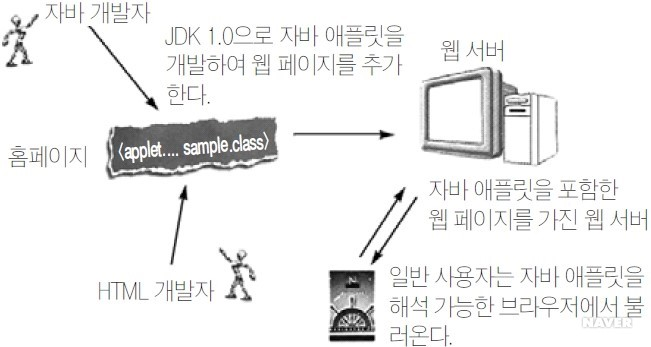

컴퓨터 언어(computer language)라는 용어는 컴퓨터와의 커뮤니케이션에 쓰이는 다양한 종류의 언어들을 일컫는 말로서, 흔히 사용되는 프로그래밍 언어라는 용어의 뜻을 확장한 용어이다. 프로그래밍 언어는 컴퓨터 언어의 부분집합이
인터넷 서비스의 하나인 월드 와이드 웹을 통해 볼 수 있는 문서를 만들 때 사용하는 웹 언어의 한 종류이다. 특히 하이퍼텍스트를 작성하기 위해 개발되었으며, 인터넷에서 웹을 통해 접근되는 대부분의 웹 페이지들은 HTML로 작성된다.